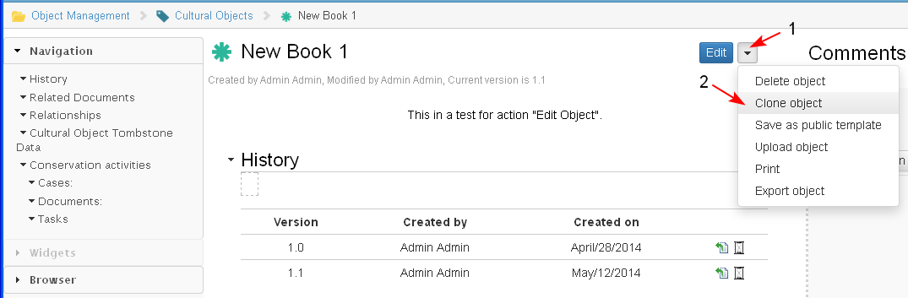

Clone object in selected location
- The user selects the action from the object landing page of the object (1-2).

- When the user selects "Clone":
- A screen opens where the user browses the cases/ projects he/she has access to and selects the one where the new object to be attached to (1-2-3-4). By default is shown the current case.

- After the case is selected a new screen opens with copied details of the original object in edit mode.
- The user is able to edit the cloned details before to save the cloning. The user could not change the object type. The user makes changes and clicks "Save" (1-2).

- The object ID of the original object is not cloned but a new object ID is created when the cloned object is saved.
- When an object is cloned none of its service data, like - created by, date of creation, modified by, etc. are cloned. The cloning has its own creator, date of creation, and so on (1).
- The cloning is saved into the object Repository and it is attached (associated) to the selected case (2) .

Clone object directly in Repository
- When the user selects the "Clone" action he/she could also select that the new object is created directly in the Objects Library (Repository) and is not associated with the project/ case.
For this operation the user must not select the target location and clone the object (1-2-3).